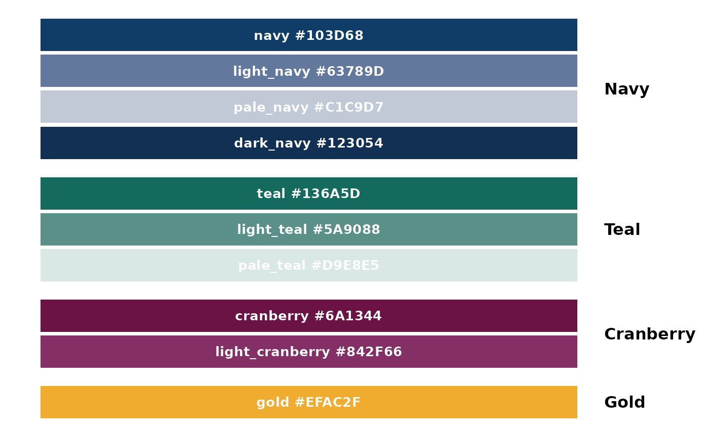
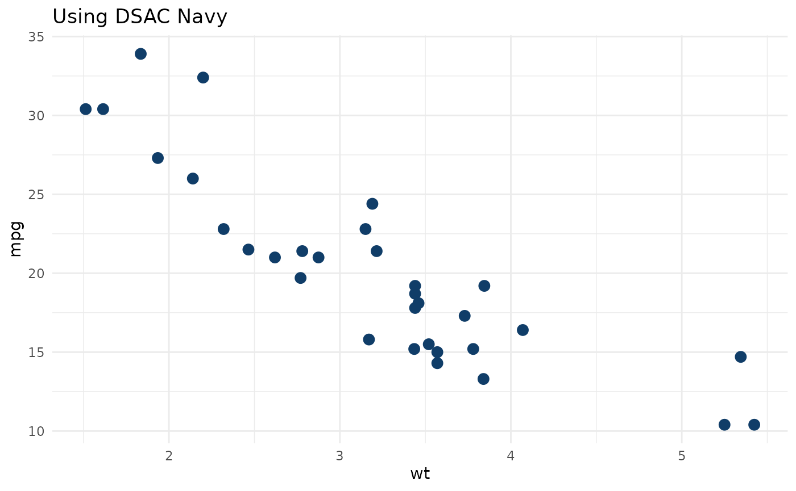
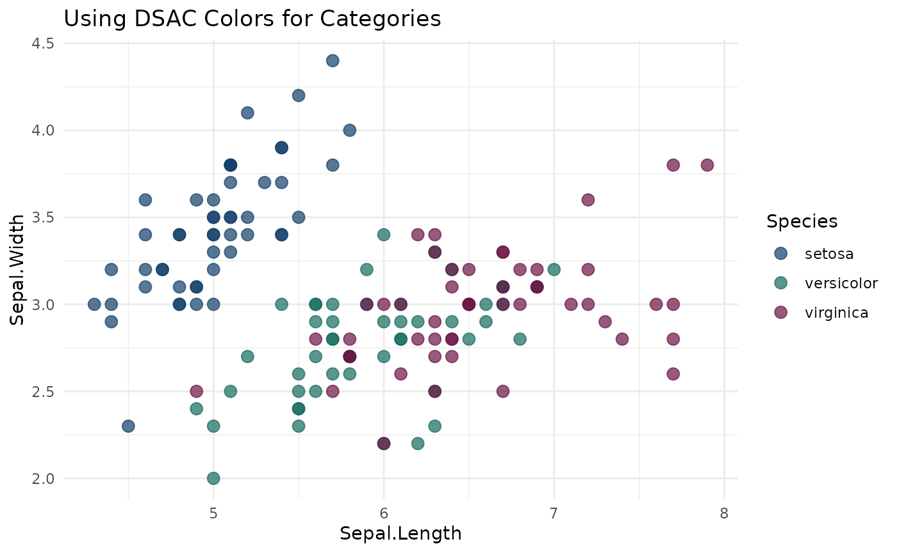

DSAC Color Palette
colors.RmdIntroduction
This package includes the official Digital Service at CMS (DSAC) color palette for use in visualizations. These colors are used internally by package functions and are also available for creating custom plots that maintain visual consistency with DSAC branding.
Available Colors
The DSAC palette includes 10 colors organized into four main color families:

Color Families
Navy and Teal are the primary colors of the DSAC brand. If you need a tint for objects or shapes, use Light Navy or Light Teal. Read the text usage guidelines before using tints as text colors to ensure you meet text contrast accessibility standards.
Use the primary colors first before using secondary colors.
Cranberry and Gold are secondary colors of the DSAC brand. If you need a tint for objects or shapes, use Light Cranberry. Read the text usage guidelines before using tints as text colors. Do not use Gold for text or information-bearing objects.
Use secondary colors when you need more than the two primary colors like in charts or diagrams.
Primary Colors
- dsac_navy #103D68
- dsac_teal #136A5D
Secondary colors
- dsac_cranberry #6A1344
- dsac_gold #EFAC2F
Tints/Shades
- dsac_light_navy #63789D
- dsac_pale_navy #C1C9D7
- dsac_dark_navy #123054
- dsac_light_teal #5A9088
- dsac_pale_teal #D9E8E5
- dsac_light_cranberry #842F66
Usage
Using Individual Colors
Each color is available as a named object:
# Use individual color objects
ggplot(mtcars, aes(x = wt, y = mpg)) +
geom_point(color = dsac_navy, size = 3) +
theme_minimal() +
labs(title = "Using DSAC Navy")
Using the Color Vector
Access all colors through the dsac_colors vector:
# Access specific colors by name
dsac_colors["teal"]
#> teal
#> "#136A5D"
dsac_colors["gold"] %>% unname()
#> [1] "#EFAC2F"
# Print all available colors
dsac_colors
#> navy teal cranberry gold light_navy
#> "#103D68" "#136A5D" "#6A1344" "#EFAC2F" "#63789D"
#> pale_navy light_teal pale_teal light_cranberry dark_navy
#> "#C1C9D7" "#5A9088" "#D9E8E5" "#842F66" "#123054"Creating Color Palettes
Use DSAC colors to create custom discrete palettes:
# Example with 4 categories
ggplot(iris, aes(x = Sepal.Length, y = Sepal.Width, color = Species)) +
geom_point(size = 3, alpha = 0.7) +
scale_color_manual(values = c(dsac_navy, dsac_teal, dsac_cranberry)) +
theme_minimal() +
labs(title = "Using DSAC Colors for Categories")